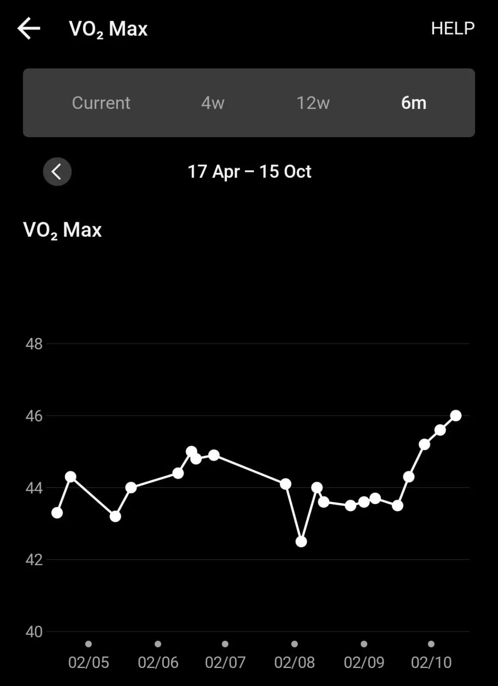
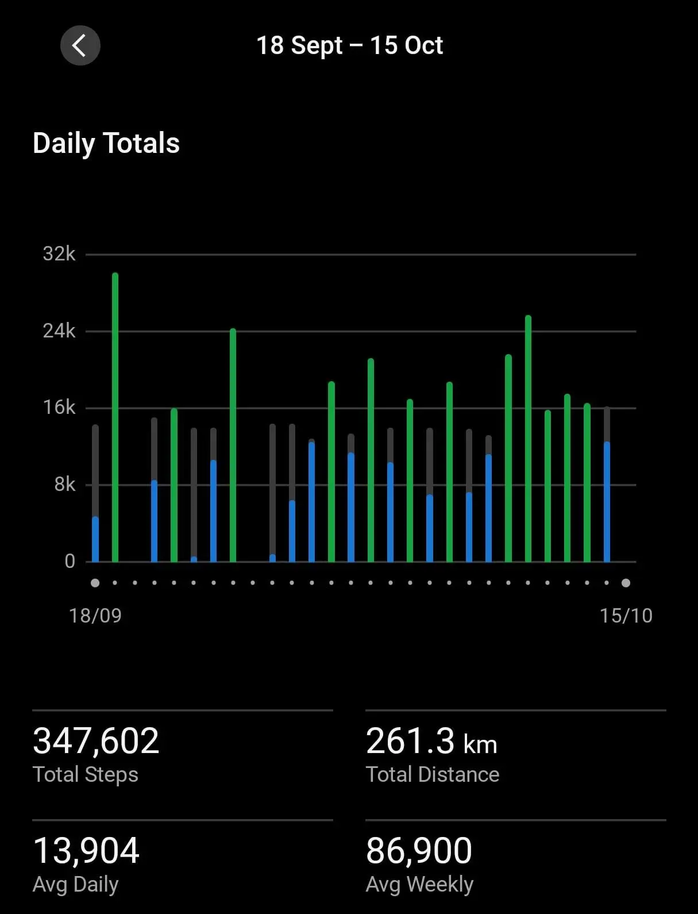

Status Updates on Run Training
I spoke briefly about my combined 14-day running and lifting cycle. The routine is intense so when I am too tired, I skip the lifting sessions as opposed to the running ones.
I am glad to report that I am seeing some benefits already.
Running¶
Last week, I was breaking in a new pair of trail-running shoes. I got the Asics Trabuco 14. These are great, though the first week running with them has been incredibly painful. The right foot was hurting a lot, especially the soft tissue surrounding the 5th Metatarsal. After one of the interval runs, I had to limp back home and I was not able to put any pressure on that foot at all.
The pain was bearable after I iced the thing; however the pain was still there for over 2 days. The pain lasted for a week during which time I was wearing the shoe for regular stuff like going to the office etc etc. Breaking-in doesn't happen only when you are running. It also happens when you are just walking in those shoes. After two weeks of pain, I can finally confirm that these shoes do not hurt as much. One more week and these will be well-broken-in I think.
I am doing atleast one very hard running workout per week. This is extremely expensive in terms of intensity. To offset this, I have incorporated cross-training in the forms of cycling and rowing. These are strictly zone 2 activities and thus I get about a good 45 mins of Zone-2 workout per week which is super chill on my joints. My weekly mileage is about 30kms at this point.
The hard sessions have me retching at the end of them. I have emptied my stomach twice at the end of these sessions. It is all good though. My body has not been pushed to such a level in a long while, and since I am training myself, I need to be accountable. I can not make excuses for myself and keep doing the easy-runs.
The most rewarding experience has been watching my V02-max steadily increase over the last 3 weeks. The value has been in the 44/45 range for over 2 years now, and now it has begun climbing. The value sits at 46 now. I am very happy. I was also able to push my HR to 195 for a brief moment this week. I have borrowed a pair of chest-based HR-monitors. I wish to get a better picture of my max hr so that I can better tailor my hr-zones.
The next hard workout isnt untill next week so I will not have that data untill then. This will be a gym session designed to push my heart rate to its maximum. Let's see.

Walking¶
I realized that I walk a lot; like I always knew that I walk a lot but I have no measurement of the same. Wearing the Garmin religously has solved the problem to some extent. I've been clocking about 13,000 steps on average every day. There are some days on which it is lower; this is days in which I do not step out of the house at all and the only go out to the nearest tea shop. Otherwise there are days on which I am recording 25000 - 30000 steps because I have a long run or something. My last 7-days distance was above 80kms.
These are ofcourse rookie numbers. My friend runs 50k a week. Some people I met run 150kms a week. There are levels to this shit and I am just starting to scratch the surface.

Strength Training¶
The body moves in 7 unique ways; Squat, Hinge, Lunge, Push, Pull, Rotate, Gait / Locomotion.
My current lifting routine works on all 7 of these sectors through compound movements. I am happy with the setup even though it takes the wind out of me. Good stuff though.
I am focusing on building strength in the Zercher Squat position. I can do a set of barbell back squat with 80 kgs (including the bar). However when I try the Zercher variation, I have to drop the weight to 70k and that is also pushing it.
My deadlift is also at 85 kilos now.
I can finally do a 1 minute deadhang after a heavy gym session. So this is great progress.
A small scare happened as I was unloading the 25kg plate from the barbell, the weight swung and hit my left knee from the side. It didnt hurt much but I was still very scared because the knee is a badly designed joint and thus it is very prone to injury especially if hit from the side. Anyway, it was a small scare. Nothing too bad has happened and I am ok.
Now I am getting late for my rowing session. Bye!!
Thanks